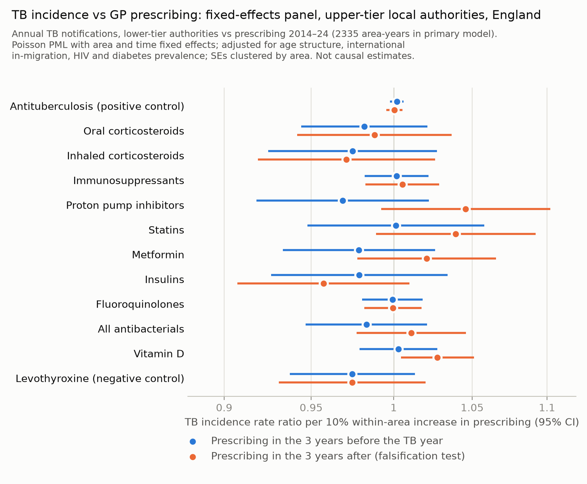

<title>Prescribing and TB in England</title>
<link rel="preconnect" href="https://fonts.googleapis.com">
<link rel="preconnect" href="https://fonts.gstatic.com" crossorigin>
<link rel="stylesheet" href="https://fonts.googleapis.com/css2?family=IBM+Plex+Sans+Condensed:wght@400;500;600&family=Source+Serif+4:ital,opsz,wght@0,8..60,400;0,8..60,600;1,8..60,400&display=swap">
<style>
  /* Palette from the Ziehl–Neelsen stain: carbol fuchsin (accent) and methylene blue (links) */
  :root {
    color-scheme: light;
    --paper: #f6f7f5;
    --panel: #eceee9;
    --plate: #fcfcfb;
    --ink: #18202b;
    --muted: #5a6470;
    --rule: #d9dcd6;
    --fuchsin: #a3245e;
    --methylene: #2c5a86;
    --focus: #2c5a86;
    --display: "IBM Plex Sans Condensed", "Arial Narrow", "Helvetica Neue", Arial, sans-serif;
    --body: "Source Serif 4", "Iowan Old Style", Georgia, "Times New Roman", serif;
  }
  @media (prefers-color-scheme: dark) {
    :root:not([data-theme="light"]) {
      color-scheme: dark;
      --paper: #11161c;
      --panel: #19202a;
      --plate: #fcfcfb;
      --ink: #e4e8ec;
      --muted: #9aa4ae;
      --rule: #2a323c;
      --fuchsin: #e07aa6;
      --methylene: #86b4e0;
      --focus: #86b4e0;
    }
  }
  :root[data-theme="dark"] {
    color-scheme: dark;
    --paper: #11161c;
    --panel: #19202a;
    --plate: #fcfcfb;
    --ink: #e4e8ec;
    --muted: #9aa4ae;
    --rule: #2a323c;
    --fuchsin: #e07aa6;
    --methylene: #86b4e0;
    --focus: #86b4e0;
  }

  body {
    background: var(--paper);
    color: var(--ink);
    font-family: var(--body);
    font-size: 1.0625rem;
    line-height: 1.62;
    padding: 0 20px;
    font-optical-sizing: auto;
  }
  .article {
    max-width: 44rem;
    margin: 0 auto;
    padding-block: 3rem 5rem;
  }

  .masthead {
    display: grid;
    gap: 0.9rem;
    padding-bottom: 1.75rem;
    border-bottom: 1px solid var(--rule);
    margin-bottom: 2rem;
  }
  .kicker {
    display: flex;
    flex-wrap: wrap;
    gap: 0.35rem 1.25rem;
    font-family: var(--display);
    font-size: 0.8rem;
    letter-spacing: 0.08em;
    text-transform: uppercase;
    color: var(--muted);
  }
  .kicker .type { color: var(--fuchsin); font-weight: 600; }
  h1 {
    font-family: var(--display);
    font-weight: 600;
    font-size: clamp(1.7rem, 4.2vw, 2.45rem);
    line-height: 1.12;
    letter-spacing: -0.01em;
    margin: 0;
    text-wrap: balance;
  }
  .byline { font-family: var(--display); color: var(--muted); font-size: 0.95rem; margin: 0; }
  .thesis {
    margin: 0.4rem 0 0;
    font-size: 1.12rem;
    line-height: 1.5;
    font-style: italic;
    color: var(--ink);
    padding-left: 1rem;
    border-left: 3px solid var(--fuchsin);
    text-wrap: pretty;
  }

  h2 {
    font-family: var(--display);
    font-weight: 600;
    font-size: 1.05rem;
    letter-spacing: 0.1em;
    text-transform: uppercase;
    color: var(--fuchsin);
    margin: 3rem 0 0.9rem;
    padding-top: 0.9rem;
    border-top: 1px solid var(--rule);
  }
  h3 {
    font-family: var(--display);
    font-weight: 600;
    font-size: 1.2rem;
    margin: 2rem 0 0.5rem;
    text-wrap: balance;
  }
  p { margin: 0 0 1rem; text-wrap: pretty; }
  strong { font-weight: 600; }
  a { color: var(--methylene); text-underline-offset: 0.15em; }
  a:focus-visible { outline: 2px solid var(--focus); outline-offset: 2px; }
  ul, ol { padding-left: 1.4rem; margin: 0 0 1rem; }
  li { margin-bottom: 0.3rem; }
  sup { line-height: 0; }

  /* Structured abstract sits on a quiet panel (pandoc --section-divs puts ids on sections) */
  section#abstract {
    background: var(--panel);
    padding: 1.25rem 1.4rem 0.4rem;
    border-radius: 4px;
    margin-bottom: 1rem;
  }
  section#abstract h2 { margin-top: 0; border-top: 0; padding-top: 0; }
  section#abstract p, section#abstract li { font-size: 0.98rem; }
  section#abstract p strong:first-child {
    font-family: var(--display);
    letter-spacing: 0.04em;
    text-transform: uppercase;
    font-size: 0.82rem;
    color: var(--muted);
    margin-right: 0.25rem;
  }

  figure { margin: 2rem 0; }
  figure img {
    display: block;
    width: 100%;
    max-width: 100%;
    height: auto;
    background: var(--plate);
    border: 1px solid var(--rule);
    border-radius: 3px;
  }
  figcaption {
    font-family: var(--display);
    font-size: 0.9rem;
    line-height: 1.45;
    color: var(--muted);
    margin-top: 0.6rem;
  }
  figcaption strong { color: var(--fuchsin); }

  .table-wrap { overflow-x: auto; margin: 0.5rem 0 2rem; border-top: 2px solid var(--ink); border-bottom: 1px solid var(--ink); }
  table {
    border-collapse: collapse;
    width: 100%;
    min-width: 40rem;
    font-family: var(--display);
    font-size: 0.86rem;
    line-height: 1.35;
    font-variant-numeric: tabular-nums;
  }
  thead th {
    text-align: left;
    font-weight: 600;
    vertical-align: bottom;
    padding: 0.55rem 0.6rem;
    border-bottom: 1px solid var(--ink);
  }
  tbody td { padding: 0.45rem 0.6rem; border-bottom: 1px solid var(--rule); vertical-align: top; }
  tbody tr:last-child td { border-bottom: 0; }
  td:first-child { font-weight: 500; }
  p:has(+ .table-wrap) { font-family: var(--display); font-size: 0.92rem; color: var(--muted); margin-bottom: 0.4rem; }
  p:has(+ .table-wrap) strong { color: var(--fuchsin); }

  section#references ol, section#references p { font-size: 0.88rem; line-height: 1.5; color: var(--muted); }
  section#references li { padding-left: 0.2rem; overflow-wrap: anywhere; }

  @media (max-width: 480px) {
    body { font-size: 1rem; }
    .article { padding-block: 2rem 3rem; }
  }
</style>

<article class="article">
  <header class="masthead">
    <div class="kicker"><span class="type">Original research ·
Ecological study</span><span>Draft 2, 14 September 2026</span></div>
    <h1>Can open prescribing data detect medicine effects on
tuberculosis? An ecological study of primary care and hospital
prescribing and TB incidence in England</h1>
    <p class="byline">[Authors to be confirmed]</p>
    <p class="thesis">Hospital TB-drug use tracks TB incidence, so the
linkage works; yet for oral corticosteroids the smallest detectable
effect (5.8% per 10% more prescribing) is 17 times the effect expected
from published relative risks (0.34%).</p>
  </header>
<section id="abstract" class="level2">
<h2>Abstract</h2>
<p><strong>Background.</strong> Corticosteroids, biologics and other
immunosuppressants increase individual risk of tuberculosis (TB). Openly
published English prescribing and TB surveillance data could, in
principle, be linked to study these relationships at population level.
We assessed whether such ecological analyses can detect drug–TB
associations, and why they may not.</p>
<p><strong>Methods.</strong></p>
<ul>
<li><strong>Exposures.</strong> Practice-level primary care prescribing
(NHSBSA English Prescribing Dataset, 2014–2024) for 12 pre-specified
drug groups, including a positive and a negative control exposure.
Hospital medicines use (Secondary Care Medicines Data, 2019–2024),
apportioned to local authorities with acute trust catchment
populations.</li>
<li><strong>Outcomes.</strong> Annual UKHSA TB notifications for 149
upper-tier and 292 lower-tier local authorities, and by region and place
of birth.</li>
<li><strong>Designs.</strong> Cross-sectional models, and Poisson
fixed-effects panels with lagged exposures, lead-exposure falsification
tests, spatial diagnostics, and analytic and simulation-based
power.</li>
</ul>
<p><strong>Results.</strong></p>
<ul>
<li><strong>Positive control.</strong> Hospital antituberculosis drug
use tracked TB incidence both between areas (Spearman ρ = 0.74) and
within areas over time (incidence rate ratio [IRR] 1.019, 95% CI
1.005–1.034, per 10% increase). The linkage can therefore detect a real
signal.</li>
<li><strong>Cross-sectional analyses.</strong> Inverse associations
between primary care prescribing and TB disappeared after adjustment for
country of birth and age.</li>
<li><strong>Within-area analyses.</strong> No drug group was associated
with subsequent TB incidence. Lower-tier oral corticosteroids gave an
IRR of 0.982 (0.944–1.021) per 10% increase. Hospital anti-TNF biologics
(0.993, 0.983–1.003), JAK inhibitors and systemic corticosteroids were
also null.</li>
<li><strong>Power.</strong> In simulations, power to detect the
published oral corticosteroid effect (RR 4.9, prevalence 0.9%) was 3.0%,
equal to the false-positive rate. An individual RR above 100 was needed
for even 57% power.</li>
<li><strong>UK-born TB.</strong> A regional association with
prednisolone dose was implausibly large and did not survive
multiple-testing correction. In people aged 65 and over, the design
failed its falsification test.</li>
</ul>
<p><strong>Conclusions.</strong> Open prescribing and TB data can be
linked validly, but they cannot detect plausible population-level
effects of medicines on TB in England: expected effects are one to two
orders of magnitude below what these designs can resolve. Causal
questions need individual-level linked data.</p>
</section>
<section id="introduction" class="level2">
<h2>Introduction</h2>
<p>TB remains a public health problem in England. After falling to a low
of 4,125 notifications in 2020, notifications rose by 13% in 2024 to
5,480 [1]. Most cases occur in people born outside the UK, many through
reactivation of infection acquired abroad [1,2], and recent national
trends have been driven largely by migration and screening policy
[3,4].</p>
<p>Host factors, several of them shaped by medicines, also modify TB
risk:</p>
<ul>
<li>Current oral glucocorticoid use is associated with a five-fold
increase in risk, rising with dose [5].</li>
<li>Inhaled corticosteroids and conventional disease-modifying drugs
carry smaller increases [6–8].</li>
<li>Anti-TNF biologics carry large increases [32].</li>
<li>Proton pump inhibitors are associated with increased risk, and
statins and metformin with lower risk [9–11].</li>
</ul>
<p>England publishes monthly prescribing for every general practice,
hospital medicines use by trust, and TB notifications by local
authority. Linking these is a low-cost way to generate or test
hypotheses about medicines and TB. Such ecological analyses face four
problems:</p>
<ul>
<li>confounding by area characteristics;</li>
<li>cross-level bias, which covariate adjustment cannot remove when
effects differ between groups [12,13];</li>
<li>power that depends on the number of areas rather than data volume
[14];</li>
<li>limitations of the datasets themselves, including inflated practice
lists that track population mobility [15,16] and prescribing patterned
by deprivation and disrupted by COVID-19 [17].</li>
</ul>
<p>We found no previous study linking area-level prescribing to TB. The
closest analogues show that drugs with large individual effects can
produce weak population signals, and that between- and within-area
associations can have opposite signs [18,19].</p>
<p>We asked whether open English prescribing data can detect drug–TB
associations at population level. We combined four elements:</p>
<ul>
<li>cross-sectional and fixed-effects designs at two geographic
scales;</li>
<li>primary care and hospital medicines, including a positive control
that validates the linkage;</li>
<li>negative control exposures and falsification tests [20,21];</li>
<li>TB in UK-born and older people, which is less influenced by
migration [22].</li>
</ul>
<p>We quantified the smallest effects these designs could detect, both
analytically and by simulation.</p>
</section>
<section id="methods" class="level2">
<h2>Methods</h2>
<section id="data-sources" class="level3">
<h3>Data sources</h3>
<p>All data were public, aggregate and anonymised; ethical approval was
not required. Code and processed data are available at
https://github.com/drcjar/tb-prescribing-england.</p>
<p><strong>Primary care prescribing.</strong></p>
<ul>
<li><strong>Source:</strong> the NHS Business Services Authority English
Prescribing Dataset (EPD) [30,40]. It records items dispensed in the
community from primary care prescriptions.</li>
<li><strong>Extraction:</strong> we aggregated items by practice and
month on the NHSBSA server for January 2014–December 2024. The
cross-sectional analysis used June 2026.</li>
<li><strong>Data checks:</strong> the BNF- and SNOMED-coded releases
gave identical national totals for June 2024. Standard GP practices (ODS
prescribing setting RO76) accounted for 98.6% of items.</li>
<li><strong>Prednisolone dose:</strong> because the average daily
quantity field is not populated for corticosteroids, we derived dose as
tablets dispensed multiplied by tablet strength.</li>
</ul>
<p><strong>Hospital medicines.</strong></p>
<ul>
<li><strong>Source:</strong> NHS Secondary Care Medicines Data (SCMD),
which reports monthly quantities of each product by NHS trust.</li>
<li><strong>Groups:</strong> we aggregated products into six groups:
antituberculosis drugs (positive control); anti-TNF biologics; other
biologics with TB risk (e.g. tocilizumab, rituximab, abatacept); JAK
inhibitors; systemic corticosteroids; and calcineurin
inhibitors/antiproliferatives.</li>
<li><strong>Quantities:</strong> rifampicin defined daily doses for
antituberculosis drugs, and approximate milligrams for the other
groups.</li>
<li><strong>Mapping to areas:</strong> we apportioned trust quantities
to local authorities using the share of each trust’s catchment
population living in each area (OHID acute trust catchment populations,
2024, all admissions). Trusts with catchment data accounted for 96–99%
of quantity in every group.</li>
</ul>
<p><strong>TB notifications.</strong></p>
<ul>
<li><strong>Annual counts by local authority, 2001–2024:</strong> from
the UKHSA TB regional reports 2024 supplementary tables, covering
upper-tier (UTLA, n = 149 analysed) and lower-tier (LTLA, n = 292)
authorities. Summed to three years, these matched Fingertips three-year
counts (r = 0.996).</li>
<li><strong>Three-year counts:</strong> Fingertips indicator 91361, for
Sub-ICB locations (cross-sectional analysis).</li>
<li><strong>By region and place of birth, with Labour Force Survey
denominators:</strong> from <em>TB in England 2025</em>, Supplementary
Table 12 [1], and by region, place of birth and age from the regional
reports.</li>
</ul>
<p><strong>Covariates.</strong></p>
<ul>
<li>ONS mid-year population estimates by age.</li>
<li>ONS international in-migration.</li>
<li>Home Office asylum support by local authority (2014 onwards).</li>
<li>Census 2021 country of birth.</li>
<li>Index of Multiple Deprivation 2025.</li>
<li>Diagnosed HIV and QOF diabetes prevalence.</li>
</ul>
<p><strong>Geography.</strong> Practices were assigned to local
authorities by postcode (ONS Postcode Directory). Denominators were
resident populations, which avoids list inflation.</p>
<p><strong>Primary care exposure groups.</strong> Twelve groups were
specified before analysis:</p>
<ul>
<li><strong>Positive control:</strong> antituberculosis drugs.</li>
<li><strong>Candidate drugs:</strong> oral corticosteroids; inhaled
corticosteroids; non-biologic immunosuppressants; proton pump
inhibitors; statins; metformin; insulins; fluoroquinolones; all
antibacterials; vitamin D.</li>
<li><strong>Negative control:</strong> levothyroxine.</li>
</ul>
</section>
<section id="statistical-analysis" class="level3">
<h3>Statistical analysis</h3>
<p><strong>Cross-sectional analysis.</strong> Negative binomial
regression of TB counts on each standardised prescribing rate, with a
population offset and robust standard errors. Models were fitted
unadjusted and adjusted for percentage non-UK-born, deprivation, age
structure and diabetes prevalence. The primary care analysis used
Sub-ICBs (2022–24); the hospital analysis used local authorities
(2019–24).</p>
<p><strong>Panel analyses.</strong></p>
<ul>
<li><strong>Model:</strong> Poisson pseudo-maximum-likelihood regression
[23] of annual TB counts, with area and year fixed effects, a log
population offset and SEs clustered by area, fitted separately for UTLAs
and LTLAs.</li>
<li><strong>Primary care exposure:</strong> the log mean prescribing
rate in years <em>t</em>−3 to <em>t</em>−1 before outcome year
<em>t</em> (outcomes 2017–2024).</li>
<li><strong>Hospital exposures:</strong> analysed in the concurrent
year, at lag <em>t</em>−1 (the causally ordered exposure) and at lead
<em>t</em>+1.</li>
<li><strong>Time-varying covariates:</strong> age structure,
international in-migration, HIV prevalence and diabetes prevalence.</li>
<li><strong>Sensitivity analyses:</strong> one-year and concurrent
windows; exclusion of 2020–21; additional adjustment for asylum support;
rolling three-year outcomes.</li>
<li><strong>Falsification test:</strong> exposure in the three years
after the outcome year.</li>
<li><strong>Effect measure:</strong> IRR per 10% within-area increase in
prescribing, with Benjamini–Hochberg false discovery rate (FDR)
correction across drug groups.</li>
<li><strong>Spatial diagnostics:</strong> Moran’s I of area-mean
residuals, using 5-nearest-neighbour weights and 999 permutations.</li>
</ul>
<p><strong>Oral corticosteroid change analyses.</strong></p>
<ul>
<li><strong>National level:</strong> annual correlations between
prescribing and TB incidence.</li>
<li><strong>Regional level:</strong> Poisson region and year
fixed-effects models (9 regions; lags 1–3) for all TB, UK-born TB,
non-UK-born TB and UK-born TB at age 65 and over. With 9 clusters, we
used cluster-robust SEs with <em>t</em>(8) critical values and
leave-one-region-out estimates. Checks included lead exposures,
levothyroxine, PPIs and statins as comparison exposures, and exclusion
of 2020–21.</li>
<li><strong>Local authority level:</strong> long differences, comparing
change in prescribing with change in TB incidence.</li>
</ul>
<p><strong>Minimum detectable effects and power.</strong></p>
<ul>
<li><strong>Analytic MDE:</strong> the MDE for a 10% increase in
prescribing (80% power, two-sided α = 0.05) is exp(2.80 × SE), taken
from the primary models.</li>
<li><strong>Expected effect:</strong> assuming incidence ∝ 1 +
<em>p</em>(RR − 1), a 10% relative increase in use gives an expected
population IRR of [1 + 1.1<em>p</em>(RR − 1)] / [1 + <em>p</em>(RR −
1)], where <em>p</em> is prevalence of use and RR the individual-level
relative risk (sources [5,6,8,9,10,11,24–29]). This ignores confounding
and ecological bias, so it favours detection.</li>
<li><strong>Simulation-based power:</strong> we kept the real UTLA panel
(areas, years, populations, covariates and oral corticosteroid
prescribing) and replaced TB counts with counts drawn from the fitted
null model, overdispersion matched to the data, and a known prescribing
effect. We fitted the primary model to 200 simulated datasets per
scenario.</li>
</ul>
<p>Analyses used Python 3.14 (pandas, statsmodels).</p>
</section>
</section>
<section id="results" class="level2">
<h2>Results</h2>
<section id="trends" class="level3">
<h3>Trends</h3>
<p>TB incidence in England fell from 11.9 per 100,000 in 2014 to 7.3 in
2020, then rose to 9.4 in 2024.</p>
<p><strong>Primary care prescribing, per 1,000 residents,
2014–2024:</strong></p>
<ul>
<li><strong>Rose:</strong> proton pump inhibitors (+35%), statins (+31%)
and vitamin D (+42%).</li>
<li><strong>Fell:</strong> oral corticosteroids (−10%) and
fluoroquinolones (−51%).</li>
</ul>
<p>Within-area variation was small relative to between-area variation:
the SD of the area-demeaned log oral corticosteroid rate was 0.07,
against 0.31 between areas.</p>
<p><strong>Hospital use, 2019–2024:</strong></p>
<ul>
<li><strong>Rose:</strong> anti-TNF biologics (+64%) and JAK inhibitors
(about 13-fold).</li>
<li><strong>Stable:</strong> systemic corticosteroids (+15%, with a 2020
dip).</li>
</ul>
</section>
<section id="positive-control-hospital-antituberculosis-drugs"
class="level3">
<h3>Positive control: hospital antituberculosis drugs</h3>
<p>Hospital antituberculosis drug use tracked TB incidence (Figure
1).</p>
<ul>
<li><strong>Between areas:</strong> UTLA Spearman ρ = 0.74. The IRR per
SD was 1.71 (1.44–2.02) unadjusted and 1.14 (1.04–1.25) adjusted.</li>
<li><strong>Within areas over time:</strong>
<ul>
<li>Same-year use: 1.019 (1.005–1.034) per 10% increase.</li>
<li>Following-year use: 1.017 (1.003–1.032), consistent with treatment
continuing into the next year.</li>
<li>Previous-year use: 0.999 (0.989–1.009), not associated.</li>
</ul></li>
<li><strong>Lower-tier areas:</strong> results were similar (same-year
1.019, 1.005–1.033).</li>
</ul>
<p>In contrast, primary care antituberculosis prescribing, which is
rare, did not track TB incidence.</p>
<figure>

<figcaption aria-hidden="true"><strong>Figure 1.</strong> Positive
control. Hospital antituberculosis drug use (rifampicin defined daily
doses per 1,000 residents, apportioned by trust catchment) and TB
incidence across 149 upper-tier local authorities, 2019–2024. Left:
between areas (period means). Right: within areas, after removing area
and year means.</figcaption>
</figure>
</section>
<section id="cross-sectional-analyses" class="level3">
<h3>Cross-sectional analyses</h3>
<ul>
<li><strong>Primary care prescribing:</strong> in 105 Sub-ICB locations,
TB incidence was associated with the percentage of residents born
outside the UK (IRR per SD 1.40) and inversely with the percentage aged
65 and over (0.67). Almost every drug group was inversely associated
with TB before adjustment (e.g. oral corticosteroids 0.59, 0.53–0.66 per
SD). After adjustment, estimates were close to the null (Table 1).</li>
<li><strong>Hospital medicines:</strong> across UTLAs, adjusted
estimates were null for anti-TNF biologics (0.96, 0.91–1.02), other
biologics, JAK inhibitors and systemic corticosteroids. Calcineurin
inhibitors/antiproliferatives showed a positive association (1.06,
1.00–1.11), consistent with confounding by the catchments of transplant
centres; the within-area estimate was null.</li>
</ul>
</section>
<section id="panel-analyses" class="level3">
<h3>Panel analyses</h3>
<p><strong>Primary care prescribing.</strong> No drug group was
associated with TB incidence at either geographic scale (Table 1, Figure
2; all <em>q</em> ≥ 0.65).</p>
<ul>
<li><strong>Oral corticosteroids:</strong> 0.982 (0.944–1.021) across
292 LTLAs (2,335 area-years) and 0.986 (0.940–1.034) across 149
UTLAs.</li>
<li><strong>Sensitivity analyses:</strong> additional adjustment for
asylum support, exclusion of 2020–21, alternative exposure windows and
rolling three-year outcomes did not change the results.</li>
<li><strong>Falsification test:</strong> future vitamin D prescribing
was associated with past TB (UTLA 1.026, 1.001–1.052).</li>
<li><strong>Total prescribing volume:</strong> adjusting for it produced
spurious inverse associations, including for the negative control, so
this adjustment was not used.</li>
<li><strong>Spatial diagnostics:</strong> raw TB rates were strongly
spatially autocorrelated (Moran’s I 0.49 UTLA, 0.42 LTLA; <em>p</em> =
0.001), but model residuals were not (0.04, <em>p</em> = 0.38; −0.01,
<em>p</em> = 0.70).</li>
</ul>
<p><strong>Hospital medicines.</strong> Within-area estimates with
exposure in the previous year were null and precise (Table 3):</p>
<ul>
<li>anti-TNF biologics 0.993 (0.983–1.003);</li>
<li>other biologics 0.994 (0.982–1.006);</li>
<li>JAK inhibitors 0.995 (0.989–1.001);</li>
<li>systemic corticosteroids 1.003 (0.989–1.018).</li>
</ul>
<figure>

<figcaption aria-hidden="true"><strong>Figure 2.</strong> Fixed-effects
panel estimates for primary care prescribing and annual TB notifications
in 292 lower-tier local authorities. Blue: prescribing in the three
years before the outcome year (primary analysis). Orange: prescribing in
the three years after (falsification test). IRR per 10% within-area
increase; area and year fixed effects; adjusted for age structure,
in-migration, HIV and diabetes prevalence.</figcaption>
</figure>
<p><strong>Table 1.</strong> Associations between primary care
prescribing and TB incidence. Cross-sectional: IRR per SD of prescribing
rate (105 Sub-ICBs). Panels: IRR per 10% within-area increase, exposure
in the three prior years (annual TB, 2017–2024).</p>
<div class="table-wrap"><table style="width:100%;">
<colgroup>
<col style="width: 16%" />
<col style="width: 16%" />
<col style="width: 16%" />
<col style="width: 16%" />
<col style="width: 16%" />
<col style="width: 16%" />
</colgroup>
<thead>
<tr class="header">
<th style="text-align: left;">Drug group</th>
<th style="text-align: left;">Cross-sectional, crude</th>
<th style="text-align: left;">Cross-sectional, adjusted</th>
<th style="text-align: left;">UTLA panel (149)</th>
<th style="text-align: left;">LTLA panel (292)</th>
<th style="text-align: left;">UTLA falsification (next 3 years)</th>
</tr>
</thead>
<tbody>
<tr class="odd">
<td style="text-align: left;">Antituberculosis (positive control)</td>
<td style="text-align: left;">0.96 (0.60–1.51)</td>
<td style="text-align: left;">0.89 (0.79–1.00)</td>
<td style="text-align: left;">1.004 (0.999–1.009)</td>
<td style="text-align: left;">1.002 (0.998–1.006)</td>
<td style="text-align: left;">1.001 (0.996–1.007)</td>
</tr>
<tr class="even">
<td style="text-align: left;">Oral corticosteroids</td>
<td style="text-align: left;">0.59 (0.53–0.66)</td>
<td style="text-align: left;">0.97 (0.82–1.14)</td>
<td style="text-align: left;">0.986 (0.940–1.034)</td>
<td style="text-align: left;">0.982 (0.944–1.021)</td>
<td style="text-align: left;">1.003 (0.955–1.054)</td>
</tr>
<tr class="odd">
<td style="text-align: left;">Inhaled corticosteroids</td>
<td style="text-align: left;">0.73 (0.64–0.83)</td>
<td style="text-align: left;">1.02 (0.90–1.15)</td>
<td style="text-align: left;">0.968 (0.909–1.030)</td>
<td style="text-align: left;">0.975 (0.925–1.027)</td>
<td style="text-align: left;">0.967 (0.914–1.023)</td>
</tr>
<tr class="even">
<td style="text-align: left;">Immunosuppressants</td>
<td style="text-align: left;">0.68 (0.61–0.77)</td>
<td style="text-align: left;">1.01 (0.93–1.09)</td>
<td style="text-align: left;">1.010 (0.985–1.035)</td>
<td style="text-align: left;">1.002 (0.982–1.022)</td>
<td style="text-align: left;">1.006 (0.977–1.035)</td>
</tr>
<tr class="odd">
<td style="text-align: left;">Proton pump inhibitors</td>
<td style="text-align: left;">0.66 (0.59–0.75)</td>
<td style="text-align: left;">0.89 (0.80–1.00)</td>
<td style="text-align: left;">0.967 (0.914–1.023)</td>
<td style="text-align: left;">0.969 (0.918–1.022)</td>
<td style="text-align: left;">1.046 (0.993–1.102)</td>
</tr>
<tr class="even">
<td style="text-align: left;">Statins</td>
<td style="text-align: left;">0.67 (0.60–0.75)</td>
<td style="text-align: left;">0.93 (0.85–1.02)</td>
<td style="text-align: left;">1.012 (0.951–1.076)</td>
<td style="text-align: left;">1.001 (0.948–1.058)</td>
<td style="text-align: left;">1.033 (0.983–1.086)</td>
</tr>
<tr class="odd">
<td style="text-align: left;">Metformin</td>
<td style="text-align: left;">1.24 (1.05–1.46)</td>
<td style="text-align: left;">0.98 (0.89–1.08)</td>
<td style="text-align: left;">0.979 (0.928–1.032)</td>
<td style="text-align: left;">0.979 (0.934–1.026)</td>
<td style="text-align: left;">1.015 (0.972–1.060)</td>
</tr>
<tr class="even">
<td style="text-align: left;">Insulins</td>
<td style="text-align: left;">0.94 (0.75–1.18)</td>
<td style="text-align: left;">0.97 (0.87–1.08)</td>
<td style="text-align: left;">0.989 (0.924–1.058)</td>
<td style="text-align: left;">0.979 (0.927–1.034)</td>
<td style="text-align: left;">0.951 (0.901–1.005)</td>
</tr>
<tr class="odd">
<td style="text-align: left;">Fluoroquinolones</td>
<td style="text-align: left;">0.77 (0.66–0.89)</td>
<td style="text-align: left;">0.97 (0.90–1.03)</td>
<td style="text-align: left;">1.000 (0.979–1.021)</td>
<td style="text-align: left;">0.999 (0.981–1.018)</td>
<td style="text-align: left;">0.997 (0.977–1.017)</td>
</tr>
<tr class="even">
<td style="text-align: left;">All antibacterials</td>
<td style="text-align: left;">0.65 (0.56–0.74)</td>
<td style="text-align: left;">0.89 (0.78–1.01)</td>
<td style="text-align: left;">0.995 (0.952–1.041)</td>
<td style="text-align: left;">0.983 (0.947–1.021)</td>
<td style="text-align: left;">1.010 (0.973–1.048)</td>
</tr>
<tr class="odd">
<td style="text-align: left;">Vitamin D</td>
<td style="text-align: left;">0.73 (0.65–0.83)</td>
<td style="text-align: left;">0.95 (0.88–1.02)</td>
<td style="text-align: left;">1.010 (0.982–1.039)</td>
<td style="text-align: left;">1.003 (0.979–1.028)</td>
<td style="text-align: left;">1.026 (1.001–1.052)</td>
</tr>
<tr class="even">
<td style="text-align: left;">Levothyroxine (negative control)</td>
<td style="text-align: left;">0.64 (0.57–0.72)</td>
<td style="text-align: left;">0.94 (0.88–1.00)</td>
<td style="text-align: left;">0.967 (0.928–1.008)</td>
<td style="text-align: left;">0.975 (0.937–1.013)</td>
<td style="text-align: left;">0.973 (0.929–1.019)</td>
</tr>
</tbody>
</table></div>
</section>
<section id="minimum-detectable-effects-and-power" class="level3">
<h3>Minimum detectable effects and power</h3>
<p><strong>Analytic MDEs.</strong> Designs could detect only effects far
larger than those implied by published relative risks (Table 2).</p>
<ul>
<li><strong>Oral corticosteroids:</strong> a 10% increase in use would
be expected to raise TB incidence by 0.34%. The LTLA panel could detect
only 5.8% (power 3.7%). An individual RR of about 153 would be needed
for 80% power.</li>
<li><strong>Other primary care groups:</strong> the MDE exceeded the
expected effect 15- to 283-fold. For protective associations (statins,
metformin), no individual effect could have produced a detectable
change.</li>
<li><strong>Hospital medicines:</strong> within-area models were more
precise (MDE 0.9–2.1% per 10%). Expected effects were still 5–87 times
smaller under illustrative assumptions; for example, anti-TNF biologics
with RR 4–15 and prevalence 0.2% imply changes of 0.06–0.27%.</li>
</ul>
<p><strong>Simulation.</strong> Results matched the analytic
calculations.</p>
<ul>
<li><strong>Calibration:</strong> with no true effect the false-positive
rate was 4.5%, and estimates were unbiased.</li>
<li><strong>Published RR (4.9):</strong> power was 3.0%.</li>
<li><strong>Larger individual effects:</strong> RR 25 gave 11% power and
RR 100 gave 57%.</li>
<li><strong>Direct population effects:</strong> an IRR of 1.05 per 10%
increase gave 75% power, and 1.10 gave 100%.</li>
</ul>
<p><strong>Table 2.</strong> Minimum detectable effects (LTLA panel)
versus expected population effects. Changes in TB incidence refer to a
10% within-area increase in prescribing.</p>
<div class="table-wrap"><table style="width:100%;">
<colgroup>
<col style="width: 11%" />
<col style="width: 11%" />
<col style="width: 11%" />
<col style="width: 11%" />
<col style="width: 11%" />
<col style="width: 11%" />
<col style="width: 11%" />
<col style="width: 11%" />
<col style="width: 11%" />
</colgroup>
<thead>
<tr class="header">
<th style="text-align: left;">Drug group</th>
<th style="text-align: right;">Individual RR</th>
<th style="text-align: right;">Prevalence of use</th>
<th style="text-align: right;">PAF</th>
<th style="text-align: right;">Expected change</th>
<th style="text-align: right;">MDE</th>
<th style="text-align: right;">MDE ÷ expected</th>
<th style="text-align: right;">Power</th>
<th style="text-align: right;">RR for 80% power</th>
</tr>
</thead>
<tbody>
<tr class="odd">
<td style="text-align: left;">Oral corticosteroids</td>
<td style="text-align: right;">4.9</td>
<td style="text-align: right;">0.9%</td>
<td style="text-align: right;">3.4%</td>
<td style="text-align: right;">0.34%</td>
<td style="text-align: right;">5.8%</td>
<td style="text-align: right;">17</td>
<td style="text-align: right;">3.7%</td>
<td style="text-align: right;">153</td>
</tr>
<tr class="even">
<td style="text-align: left;">Inhaled corticosteroids</td>
<td style="text-align: right;">1.27</td>
<td style="text-align: right;">5.2%</td>
<td style="text-align: right;">1.4%</td>
<td style="text-align: right;">0.14%</td>
<td style="text-align: right;">7.8%</td>
<td style="text-align: right;">54</td>
<td style="text-align: right;">2.8%</td>
<td style="text-align: right;">69</td>
</tr>
<tr class="odd">
<td style="text-align: left;">Immunosuppressants</td>
<td style="text-align: right;">1.2</td>
<td style="text-align: right;">0.5%<sup>a</sup></td>
<td style="text-align: right;">0.1%</td>
<td style="text-align: right;">0.01%</td>
<td style="text-align: right;">2.9%</td>
<td style="text-align: right;">283</td>
<td style="text-align: right;">2.6%</td>
<td style="text-align: right;">81</td>
</tr>
<tr class="even">
<td style="text-align: left;">Proton pump inhibitors</td>
<td style="text-align: right;">1.28</td>
<td style="text-align: right;">14.2%</td>
<td style="text-align: right;">3.8%</td>
<td style="text-align: right;">0.38%</td>
<td style="text-align: right;">8.0%</td>
<td style="text-align: right;">20</td>
<td style="text-align: right;">3.4%</td>
<td style="text-align: right;">28</td>
</tr>
<tr class="odd">
<td style="text-align: left;">Statins</td>
<td style="text-align: right;">0.60</td>
<td style="text-align: right;">12.8%</td>
<td style="text-align: right;">−5.4%</td>
<td style="text-align: right;">−0.54%</td>
<td style="text-align: right;">8.2%</td>
<td style="text-align: right;">15</td>
<td style="text-align: right;">3.9%</td>
<td style="text-align: right;">not attainable<sup>b</sup></td>
</tr>
<tr class="even">
<td style="text-align: left;">Metformin</td>
<td style="text-align: right;">0.51</td>
<td style="text-align: right;">4.4%</td>
<td style="text-align: right;">−2.2%</td>
<td style="text-align: right;">−0.22%</td>
<td style="text-align: right;">7.0%</td>
<td style="text-align: right;">31</td>
<td style="text-align: right;">3.1%</td>
<td style="text-align: right;">not attainable<sup>b</sup></td>
</tr>
</tbody>
</table></div>
<p><sup>a</sup> Assumed from EPD item volumes. <sup>b</sup> Even RR = 0
changes incidence by less than the MDE. PAF, population attributable
fraction; MDE, minimum detectable effect (80% power, α = 0.05).</p>
<p><strong>Table 3.</strong> Hospital medicines and TB incidence, UTLAs,
2019–2024. Within-area IRR per 10% increase; MDE per 10% increase with
exposure in the previous year. Expected changes use illustrative
assumptions of individual RR and prevalence.</p>
<div class="table-wrap"><table style="width:100%;">
<colgroup>
<col style="width: 16%" />
<col style="width: 16%" />
<col style="width: 16%" />
<col style="width: 16%" />
<col style="width: 16%" />
<col style="width: 16%" />
</colgroup>
<thead>
<tr class="header">
<th style="text-align: left;">Drug group</th>
<th style="text-align: left;">Within-area, same year</th>
<th style="text-align: left;">Within-area, previous year</th>
<th style="text-align: left;">Within-area, next year</th>
<th style="text-align: right;">MDE</th>
<th style="text-align: left;">Expected change (assumption)</th>
</tr>
</thead>
<tbody>
<tr class="odd">
<td style="text-align: left;">Antituberculosis (positive control)</td>
<td style="text-align: left;">1.019 (1.005–1.034)</td>
<td style="text-align: left;">0.999 (0.989–1.009)</td>
<td style="text-align: left;">1.017 (1.003–1.032)</td>
<td style="text-align: right;">1.5%</td>
<td style="text-align: left;">—</td>
</tr>
<tr class="even">
<td style="text-align: left;">Anti-TNF biologics</td>
<td style="text-align: left;">0.993 (0.983–1.002)</td>
<td style="text-align: left;">0.993 (0.983–1.003)</td>
<td style="text-align: left;">1.006 (0.991–1.022)</td>
<td style="text-align: right;">1.5%</td>
<td style="text-align: left;">0.06–0.27% (RR 4–15, 0.2%)</td>
</tr>
<tr class="odd">
<td style="text-align: left;">Other biologics</td>
<td style="text-align: left;">0.992 (0.980–1.004)</td>
<td style="text-align: left;">0.994 (0.982–1.006)</td>
<td style="text-align: left;">1.007 (0.990–1.024)</td>
<td style="text-align: right;">1.7%</td>
<td style="text-align: left;">0.02% (RR 2, 0.2%)</td>
</tr>
<tr class="even">
<td style="text-align: left;">JAK inhibitors</td>
<td style="text-align: left;">0.990 (0.984–0.996)</td>
<td style="text-align: left;">0.995 (0.989–1.001)</td>
<td style="text-align: left;">0.995 (0.988–1.002)</td>
<td style="text-align: right;">0.9%</td>
<td style="text-align: left;">0.02% (RR 4, 0.05%)</td>
</tr>
<tr class="odd">
<td style="text-align: left;">Systemic corticosteroids</td>
<td style="text-align: left;">0.993 (0.980–1.006)</td>
<td style="text-align: left;">1.003 (0.989–1.018)</td>
<td style="text-align: left;">1.005 (0.985–1.025)</td>
<td style="text-align: right;">2.1%</td>
<td style="text-align: left;">0.34% (RR 4.9, 0.9%)</td>
</tr>
<tr class="even">
<td style="text-align: left;">Calcineurin
inhibitors/antiproliferatives</td>
<td style="text-align: left;">0.995 (0.987–1.004)</td>
<td style="text-align: left;">1.003 (0.993–1.012)</td>
<td style="text-align: left;">0.997 (0.986–1.009)</td>
<td style="text-align: right;">1.4%</td>
<td style="text-align: left;">0.06% (RR 3, 0.3%)</td>
</tr>
</tbody>
</table></div>
</section>
<section id="oral-corticosteroids-and-tb-by-place-of-birth-and-age"
class="level3">
<h3>Oral corticosteroids and TB by place of birth and age</h3>
<p><strong>Trends.</strong> Oral corticosteroid items fell from 141.5 to
127.7 per 1,000 residents between 2014 and 2024. Prednisolone milligrams
per resident fell 21.2%, because courses also became smaller (Figure 3).
Changes in prescribing were not associated with changes in TB incidence
in any of the following:</p>
<ul>
<li>nationally (year-on-year changes, all <em>p</em> ≥ 0.2);</li>
<li>across regions (adjusted lag 1: 0.997, 0.788–1.260);</li>
<li>across 138 UTLAs (long differences 1.000, 0.934–1.072).</li>
</ul>
<figure>

<figcaption aria-hidden="true"><strong>Figure 3.</strong> Oral
corticosteroid prescribing in English primary care, 2014–2024:
prednisolone items, other oral corticosteroid items, and prednisolone
tablet milligrams per resident.</figcaption>
</figure>
<p><strong>Non-UK-born TB</strong> (36,633 notifications, 2015–2024).
Oral corticosteroid prescribing was not associated with TB. The
falsification test failed: future prescribing was associated with past
TB (lead 3: 1.36, 1.03–1.80).</p>
<p><strong>UK-born TB</strong> (11,876 notifications).</p>
<ul>
<li><strong>Prednisolone milligrams per resident</strong> were
associated with TB at lags of 2 years (1.37, 1.08–1.73) and 3 years
(1.38, 1.04–1.83). This association:
<ul>
<li>passed the lead-exposure and comparison-exposure checks;</li>
<li>did not survive correction for the six steroid tests (Holm
<em>p</em> = 0.09 and 0.16).</li>
</ul></li>
<li><strong>All adjusted regional models:</strong> 7 of 90 were
nominally significant, against 4.5 expected by chance.</li>
</ul>
<p><strong>UK-born TB at age 65 and over</strong> (2,401 notifications),
the group with the highest steroid use and mostly reactivation
disease.</p>
<ul>
<li><strong>Lagged prescribing:</strong> not associated with TB (lag 1:
1.34, 0.74–2.42).</li>
<li><strong>Falsification test:</strong> failed. Future prescribing was
associated with past TB (lead 2: 1.59, 1.04–2.43), and so was future
levothyroxine prescribing (lead 1: 1.33, 1.05–1.69).</li>
</ul>
<figure>

<figcaption aria-hidden="true"><strong>Figure 4.</strong> Oral
corticosteroid items per 1,000 residents (blue) and UK-born TB
notification rate (orange) by UKHSA region, indexed to 2014 =
100.</figcaption>
</figure>
</section>
</section>
<section id="discussion" class="level2">
<h2>Discussion</h2>
<section id="principal-findings" class="level3">
<h3>Principal findings</h3>
<p>Linking open English prescribing and TB data is feasible and valid.
Hospital antituberculosis drug use tracked TB incidence between areas
and within areas over time, as it should. Yet across primary care and
hospital medicines, two geographic scales and several designs, we found
no credible association between medicines that modify TB risk and TB
incidence.</p>
<p>The analytic and simulation analyses explain why. Expected population
effects of these medicines are 5 to more than 100 times smaller than the
smallest effects the designs can detect. Apparent associations arose,
but each was explained by confounding or chance:</p>
<ul>
<li>crude cross-sectional associations were explained by country of
birth and age;</li>
<li>falsification tests failed for several exposures;</li>
<li>the one nominal signal, prednisolone dose and UK-born TB, was
implausibly large and fragile.</li>
</ul>
</section>
<section id="interpretation" class="level3">
<h3>Interpretation</h3>
<p><strong>Why the positive control succeeded and the other drugs did
not.</strong> Antituberculosis drugs are used almost exclusively by
people with TB, so their volume scales almost one-to-one with incidence.
By contrast, a medicine that increases risk affects incidence only
through the small fraction of the population exposed.</p>
<ul>
<li><strong>Oral corticosteroids:</strong> the RR of about 5 [5] applies
to roughly 1% of people [24,25], so a 10% change in use should move TB
incidence by about 0.3%. This is consistent with the small population
attributable fractions reported for inhaled corticosteroids (0.5%)
[7].</li>
<li><strong>Anti-TNF biologics:</strong> the individual RR is large
[32], but prevalence is lower, so expected changes are even
smaller.</li>
</ul>
<p><strong>Why better data did not solve the problem.</strong> Hospital
data made exposure measurement more complete and more precise (MDE about
1.5% per 10%), and lower-tier geography narrowed confidence intervals by
about 20%. Neither closed a gap of one to two orders of magnitude. Power
in aggregate studies depends on the number of areas [14], and
prescribing varies little within areas over time [31]. The simulations
show that only direct population effects of about 5% per 10% change in
prescribing, implying individual RRs above 100, would be reliably
detectable.</p>
<p><strong>Crude versus adjusted estimates.</strong> The sign reversal
between crude cross-sectional and adjusted or within-area estimates
mirrors that reported for diabetes and TB between and within countries
[19]. Ecological bias from effect modification cannot be removed by
adjustment [12]. Drug-associated TB risk may differ by ethnicity
[32,33].</p>
<p><strong>UK-born TB and trend confounding.</strong> The UK-born
analyses illustrate how false signals arise. UK-born TB roughly halved
in most regions over the decade, driven by social risk factors,
transmission and demographic change [22,34]. With only nine regions,
coincident trends in prescribing produce apparent associations. The
failed falsification tests in non-UK-born TB and in older UK-born people
show this directly.</p>
</section>
<section id="strengths-and-limitations" class="level3">
<h3>Strengths and limitations</h3>
<p><strong>Strengths:</strong></p>
<ul>
<li>All data were public, and code and processed data are openly
available.</li>
<li>The exposures, controls and falsification tests were specified in
advance.</li>
<li>A positive control validated the linkage.</li>
<li>Internal consistency was checked:
<ul>
<li>the prescribing releases gave identical totals;</li>
<li>annual TB counts matched published three-year counts;</li>
<li>98% of items linked to an area.</li>
</ul></li>
<li>Two geographic scales were used, together with spatial
diagnostics.</li>
<li>Power was assessed both analytically and by simulation.</li>
</ul>
<p><strong>Limitations:</strong></p>
<ul>
<li><strong>Exposure measurement:</strong>
<ul>
<li>Exposure was measured as dispensed quantities per resident, not
people treated.</li>
<li>Hospital quantities mix products with different dose
conventions.</li>
<li>Homecare-delivered biologics may be incompletely captured in SCMD;
we could not verify this.</li>
</ul></li>
<li><strong>Hospital catchments:</strong> shares derived from admissions
were applied to all years and all drug groups, and may misallocate
specialist services such as transplant and rheumatology centres.</li>
<li><strong>Stratified outcomes:</strong> TB by place of birth and age
was available only by region.</li>
<li><strong>Unmeasured confounding:</strong> the latent TB screening
programme for new migrants (area-level data end in 2019/20 and are
unmatched to local authority codes) [36], social risk factors and
diagnostic intensity [37] could not be adjusted for.</li>
<li><strong>Individual relative risks:</strong> those for proton pump
inhibitors, statins and metformin come mainly from high-incidence
settings, and prevalence assumptions for hospital drugs are
illustrative. Neither would change the conclusion unless the true values
were larger by an order of magnitude.</li>
</ul>
</section>
<section id="implications" class="level3">
<h3>Implications</h3>
<p>Open prescribing data remain valuable for describing prescribing
[30,40], and our positive control shows they can be linked validly to
surveillance data. They cannot, however, estimate medicine effects on a
rare outcome such as TB.</p>
<ul>
<li><strong>Causal questions:</strong> these need individual-level
linked data, for example CPRD primary care records linked to Hospital
Episode Statistics and UKHSA TB surveillance, analysed with target trial
emulation. Even national cohorts give wide intervals for modest RRs
[39]. We found no target trial emulation of these drugs and TB; the only
drug–TB emulation identified concerned DPP-4 inhibitors [38].</li>
<li><strong>Reporting:</strong> ecological studies of rare outcomes
should report minimum detectable effects, positive controls and
falsification tests alongside associations.</li>
</ul>
</section>
<section id="conclusion" class="level3">
<h3>Conclusion</h3>
<p>Open prescribing and TB notification data in England can be linked
validly, but ecological analyses of them cannot detect the
population-level effects of medicines on TB: plausible effects lie one
to two orders of magnitude below what these designs can resolve.</p>
</section>
</section>
<section id="data-and-code-availability" class="level2">
<h2>Data and code availability</h2>
<p>All inputs are publicly available:</p>
<ul>
<li>NHSBSA Open Data Portal: English Prescribing Dataset and Secondary
Care Medicines Data;</li>
<li>NHS Digital practice-level prescribing;</li>
<li>UKHSA Fingertips and TB report supplementary tables;</li>
<li>OHID acute trust catchment populations;</li>
<li>ONS/Nomis population and migration estimates;</li>
<li>Home Office asylum support statistics;</li>
<li>NHS England Organisation Data Service;</li>
<li>MHCLG English Indices of Deprivation 2025.</li>
</ul>
<p>Code, processed datasets and outputs are available at
https://github.com/drcjar/tb-prescribing-england.</p>
</section>
<section id="references" class="level2">
<h2>References</h2>
<ol type="1">
<li>UK Health Security Agency. Tuberculosis in England: 2025 report
(data up to end of 2024). London: UKHSA; 2025.</li>
<li>Aldridge RW, et al. Tuberculosis in migrants moving from
high-incidence to low-incidence countries: a population-based cohort
study of 519 955 migrants screened before entry to England, Wales, and
Northern Ireland. <em>Lancet</em> 2016.
doi:10.1016/S0140-6736(16)31008-X</li>
<li>Thomas HL, et al. Explaining the recent decline in tuberculosis
incidence in the UK. <em>Thorax</em> 2018.
doi:10.1136/thoraxjnl-2017-211074</li>
<li>Crofts JP, et al. Tuberculosis trends in England. <em>Public
Health</em> 2008. doi:10.1016/j.puhe.2008.04.011</li>
<li>Jick SS, Lieberman ES, Rahman MU, Choi HK. Glucocorticoid use, other
associated factors, and the risk of tuberculosis. <em>Arthritis
Rheum</em> 2006;55:19–26. doi:10.1002/art.21705</li>
<li>Brassard P, Suissa S, Kezouh A, Ernst P. Inhaled corticosteroids and
risk of tuberculosis in patients with respiratory diseases. <em>Am J
Respir Crit Care Med</em> 2011;183:675–8.
doi:10.1164/rccm.201007-1099OC</li>
<li>Castellana G, et al. Inhaled corticosteroids and risk of
tuberculosis in patients with obstructive lung diseases: a systematic
review and meta-analysis. <em>Int J Chron Obstruct Pulmon Dis</em>
2019;14:2219–27. doi:10.2147/COPD.S209273</li>
<li>Brassard P, Kezouh A, Suissa S. Antirheumatic drugs and the risk of
tuberculosis. <em>Clin Infect Dis</em> 2006;43:717–22.
doi:10.1086/506935</li>
<li>Song HJ, Park H, Park S, Kwon JW. Association of proton pump
inhibitor use with risk of tuberculosis. <em>Pharmacoepidemiol Drug
Saf</em> 2019;28:830–9. doi:10.1002/pds.4773</li>
<li>Li X, Sheng L, Lou L. Statin use may be associated with reduced
active tuberculosis infection: a meta-analysis. <em>Front Med</em>
2020;7:121. doi:10.3389/fmed.2020.00121</li>
<li>Zhang M, He JQ. Impacts of metformin on tuberculosis incidence and
clinical outcomes in patients with diabetes: a systematic review and
meta-analysis. <em>Eur J Clin Pharmacol</em> 2020;76:149–59.
doi:10.1007/s00228-019-02786-y</li>
<li>Greenland S, Morgenstern H. Ecological bias, confounding, and effect
modification. <em>Int J Epidemiol</em> 1989;18:269–74.
doi:10.1093/ije/18.1.269</li>
<li>Morgenstern H. Ecologic studies in epidemiology: concepts,
principles, and methods. <em>Annu Rev Public Health</em> 1995;16:61–81.
doi:10.1146/annurev.pu.16.050195.000425</li>
<li>Sheppard L, et al. Ecologic inference in aggregate data studies.
<em>Stat Med</em> 1996. PMID 8888477</li>
<li>Hudson SM, et al. GP practice list inflation and cancer screening
coverage. <em>J Med Screen</em> 2025. doi:10.1177/09691413251347408</li>
<li>Venkatesan S, et al. Registered patient denominators compared with
Census 2021. <em>JMIR Public Health Surveill</em> 2025.
doi:10.2196/64788</li>
<li>Richards TC, et al. Neighbourhood variation in prescribing using
OpenPrescribing data. <em>Sci Rep</em> 2025.
doi:10.1038/s41598-025-02969-x</li>
<li>Hermans S, et al. Ecological analysis of TB notifications during
antiretroviral therapy scale-up in Cape Town. <em>J Int AIDS Soc</em>
2015. doi:10.7448/IAS.18.1.20240</li>
<li>Költringer FA, et al. Diabetes and tuberculosis: within- and
between-country associations in a global panel. <em>BMC Public
Health</em> 2023. doi:10.1186/s12889-023-15213-w</li>
<li>Lipsitch M, Tchetgen Tchetgen E, Cohen T. Negative controls: a tool
for detecting confounding and bias in observational studies.
<em>Epidemiology</em> 2010;21:383–8.
doi:10.1097/EDE.0b013e3181d61eeb</li>
<li>Prasad V, Jena AB. Prespecified falsification end points: can they
validate true observational associations? <em>JAMA</em> 2013;309:241–2.
doi:10.1001/jama.2012.96867</li>
<li>Nguipdop-Djomo P, et al. Small-area level socio-economic deprivation
and tuberculosis rates in England. <em>PLoS One</em> 2020.
doi:10.1371/journal.pone.0240879</li>
<li>Santos Silva JMC, Tenreyro S. The log of gravity. <em>Rev Econ
Stat</em> 2006;88:641–58.</li>
<li>van Staa TP, et al. Use of oral corticosteroids in the United
Kingdom. <em>QJM</em> 2000;93:105–11. doi:10.1093/qjmed/93.2.105</li>
<li>Fardet L, Petersen I, Nazareth I. Prevalence of long-term oral
glucocorticoid prescriptions in the UK over the past 20 years.
<em>Rheumatology</em> 2011;50:1982–90.
doi:10.1093/rheumatology/ker017</li>
<li>Bloom CI, Saglani S, Feary J, Jarvis D, Quint JK. Changing
prevalence of current asthma and inhaled corticosteroid treatment in the
UK. <em>Eur Respir J</em> 2019;53:1802130.
doi:10.1183/13993003.02130-2018</li>
<li>Abrahami D, McDonald EG, Schnitzer M, Azoulay L. Trends in acid
suppressant drug prescriptions in primary care in the UK. <em>BMJ
Open</em> 2020;10:e041529. doi:10.1136/bmjopen-2020-041529</li>
<li>O’Keeffe AG, Nazareth I, Petersen I. Time trends in the prescription
of statins for the primary prevention of cardiovascular disease in the
United Kingdom. <em>Clin Epidemiol</em> 2016;8:123–32.
doi:10.2147/CLEP.S104258</li>
<li>Sharma M, Nazareth I, Petersen I. Trends in incidence, prevalence
and prescribing in type 2 diabetes mellitus in the UK. <em>BMJ Open</em>
2016;6:e010210. doi:10.1136/bmjopen-2015-010210</li>
<li>Bacon S, Goldacre B. Barriers to working with national health
service England’s open data. <em>J Med Internet Res</em> 2020.
doi:10.2196/15603</li>
<li>Gunasekara FI, Richardson K, Carter K, Blakely T. Fixed effects
analysis of repeated measures data. <em>Int J Epidemiol</em>
2014;43:264–9. doi:10.1093/ije/dyt221</li>
<li>Dixon WG, et al. Drug-specific risk of tuberculosis in patients with
rheumatoid arthritis treated with anti-TNF therapy. <em>Ann Rheum
Dis</em> 2010;69:522–8. doi:10.1136/ard.2009.118935</li>
<li>Ruzangi J, et al. Chronic kidney disease and tuberculosis: a CPRD
cohort study. <em>BMC Nephrol</em> 2020.
doi:10.1186/s12882-020-02065-4</li>
<li>Davidson JA, et al. Risk factors for recent transmission of
tuberculosis in England. <em>Am J Epidemiol</em> 2018.
doi:10.1093/aje/kwy119</li>
<li>RECOVERY Collaborative Group. Dexamethasone in hospitalized patients
with Covid-19. <em>N Engl J Med</em> 2021;384:693–704.
doi:10.1056/NEJMoa2021436</li>
<li>Berrocal-Almanza LC, et al. Effectiveness of nationwide programmatic
testing and treatment for latent tuberculosis infection in migrants in
England. <em>Lancet Public Health</em> 2022.
doi:10.1016/S2468-2667(22)00031-7</li>
<li>Kumwichar P, et al. Tuberculosis following COVID-19 pneumonia:
national claims data from Thailand. <em>EClinicalMedicine</em> 2023.
doi:10.1016/j.eclinm.2023.101825</li>
<li>Chen YG, et al. DPP-4 inhibitors and pulmonary tuberculosis: a
target trial emulation. <em>BMC Med</em> 2025.
doi:10.1186/s12916-025-04423-1</li>
<li>Pealing L, et al. Risk of tuberculosis in patients with diabetes:
population based cohort study using the UK Clinical Practice Research
Datalink. <em>BMC Med</em> 2015. doi:10.1186/s12916-015-0381-9</li>
<li>OpenPrescribing.net, Bennett Institute for Applied Data Science,
University of Oxford. Frequently asked questions. 2026.</li>
</ol>
<p><em>Reference titles for [2–4, 14–19, 22, 30, 33, 34, 37, 38] are
abbreviated and must be checked against source records before
submission.</em></p>
</section>
</article>
